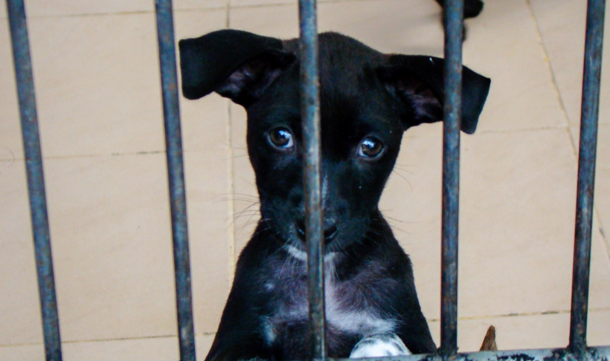

Meine Laufbahn begann am OP-Tisch: als Tierarzt habe ich gelernt, unter Druck klar zu entscheiden, und dass jedes einzelne Leben, um das man sich kümmert, zählt. Aus der klinischen Praxis hat mich der Weg über die Wissenschaft in internationale Führungspositionen geführt — dort habe ich gelernt, wie man Organisationen aufbaut, Teams über Ländergrenzen hinweg führt und komplexe Vorhaben tatsächlich zum Abschluss bringt.
Diese drei Welten — Tiermedizin, Wissenschaft, internationale Führung — liefen lange getrennt nebeneinander her. Heute führe ich sie zusammen. Nach vielen erfolgreichen Berufsjahren bin ich dankbar für all die Erfahrungen, die ich sammeln durfte, und es ist Zeit, etwas zurückzugeben. Nicht als Ruhestandsprojekt, sondern als das, was mich am meisten antreibt: Tieren, Natur und unserem Planeten mit genau den Werkzeugen zu helfen, die ich mir über Jahrzehnte erarbeitet habe.
Deshalb arbeite ich heute mit Tierschutz- und Naturschutzorganisationen zusammen — nicht als externer Berater auf Distanz, sondern als Partner, der zuhört, versteht und gemeinsam Lösungen entwickelt und umsetzt. Wissenschaftlich fundiert, ehrlich auch dann, wenn etwas nicht passt, und immer mit dem Ziel, echte Wirkung für Tiere, Natur und Planet zu schaffen.
Wie das konkret aussieht →